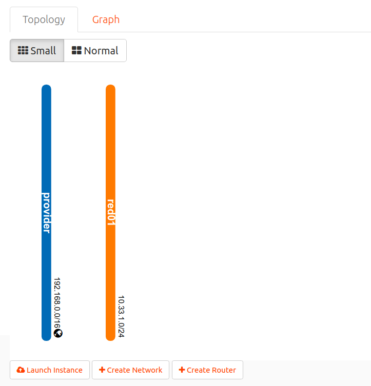
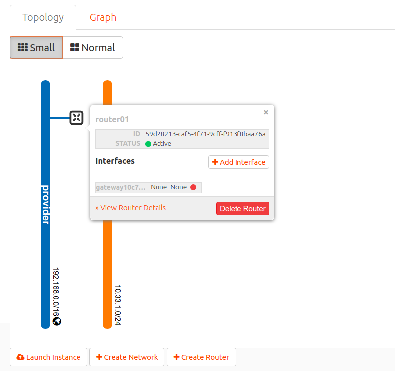

P02-Redes y routers
En está práctica vamos crear una red con direccionamiento 10.33.1.0/24 (subred en terminología de OpenStack) y un router que conectará la red creada con la red del instituto (192.168.0.0/16) (red provider en terminología de OpenStackLDV).
Consulta información sobre redes, subredes y routers en la sección Conceptos.
- Accede a Horizon.
- Inicia sesión con tu usuario y contraseña.
- En el menú de la izquierda accede a Project, Network, Networks y observa que existe la red provider. Esta red representa a la red del instituto y es accesible desde todos los proyectos de OpenStackLDV. No es posible conectar directamente instancias a esta red, si se intenta crear una instancia conectada a está red se provocará un error y la instancia no se creará correctamente.

- Accede a Project, Network, Routers y verifica que no existe ningún router en tu proyecto.
- Accede a Project, Network, Network Topology y observa el diagrama con las redes y routers actuales. Solo existirá la red provider.

- Accede Project, Network, Networks.
-
Pincha en Create Networks para crear una nueva red y una nueva subred.
7.1. Introduce el nombre red01 y pincha en Next.

7.2. Introduce el nombre subred01, dirección de red 10.33.1.0/24, gateway 10.33.1.1, y pincha en Next.

7.3. Habilita un servidor DHCP en la red que sirva en el rango 10.33.1.10, 10.33.1.30 y otorgue 8.8.8.8 como servidor DNS. Pincha en Create para crear la red.


-
Accede a Project, Network, Network Topology y observa el diagrama con las redes y routers actuales. Existiran las dos redes pero no están conectadas. 
- Accede Project, Network, Routers.
- Pincha en Create Routers para crear un nuevo router. Asígnale el nombre router01 y selecciona provider como red externa. Pincha en Create para crear el router.

- Accede a Project, Network, Network Topology y verifica la topología de red. Observa que el router solo está conectado a la red provider. 
- Accede Project, Network, Routers y pincha sobre el router01.
-
Accede a la pestaña Interfaces y pincha en Add interface.
13.1. Selecciona la red01 y introduce la IP 10.33.1.1.

13.2. Pincha en Submit para crear el interfaz.
-
Accede a Project, Network, Network Topology y verifica la topología de red. Observa que se ha creado un interfaz en el router y se ha conectado con la red01. Fíjate en la IP que se le ha asignado al interfaz.